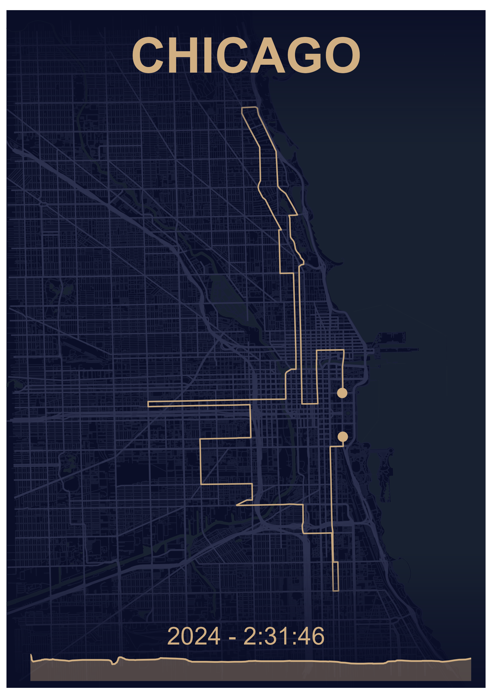
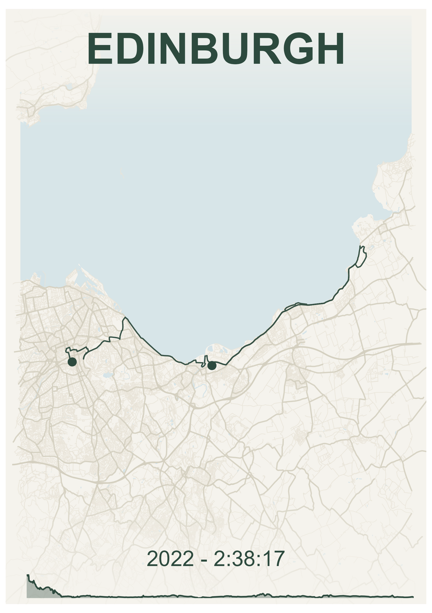
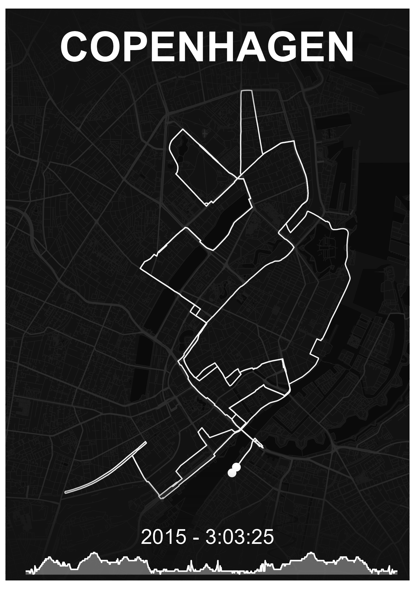
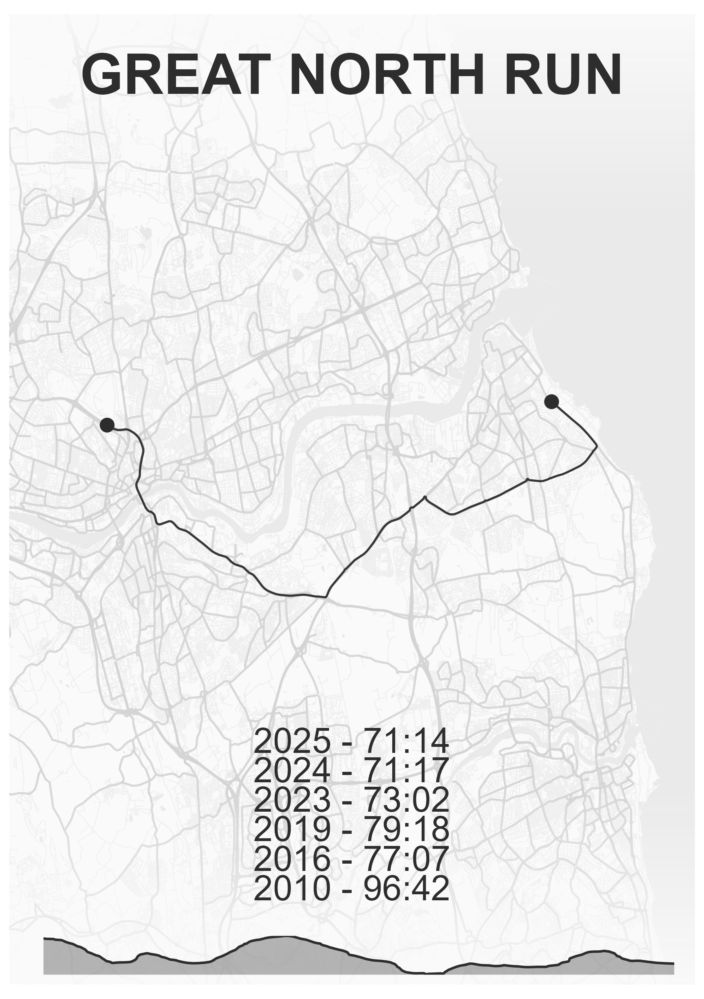
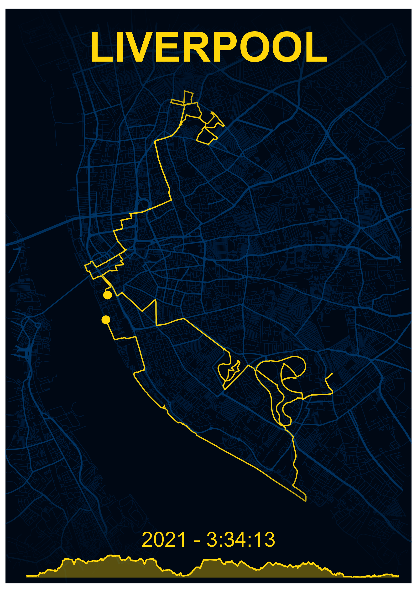

Ben Black
Introduction
Create print-ready maps of your running routes, races, or multi-day adventures using GPX data. mapMementoR generates visualizations with customizable color schemes, elevation profiles, OpenStreetMap backgrounds, and support for tracking multiple performances at the same location.






Features
- Single Route Maps: Create elegant maps showing individual races with performance details
- Multi-Track Maps: Combine multiple GPX tracks on one map (perfect for multi-stage races or relay events)
- Built-in Styles: Six professionally designed color schemes (Dark, Emerald, Ghost, Nautical, Zen, Obsidian)
- Customizable Appearance: Full control over colors, fonts, page sizes, and map elements
- Elevation Profiles: Automatic generation of elevation charts from GPS data
- OpenStreetMap Integration: Beautiful background layers including streets, highways, water bodies, and coastlines
- Batch Processing: Generate maps for multiple races and styles simultaneously
- Power of 10 Integration: Automatically import UK running race data
Installation
# install.packages("pak")
pak::pak("blenback/mapMementoR")Quick Start
Single Race Maps
library(mapMementoR)
# Create maps for all races in your YAML file
memento_map_series(
output_dir = "my_maps",
races_path = "data-raw/my_races.yaml",
styles = c("Dark", "Emerald"),
page_size = "A4",
dpi = 300
)Multi-Track Maps
# Create maps combining multiple tracks
multitrack_map_series(
output_dir = "outputs",
track_sets_path = "data-raw/track_sets.yaml",
styles = c("Dark", "Zen"),
page_size = "A3",
with_labels = TRUE
)Configuration
Race Data YAML
The race data file defines your races and performance entries. Example races.yaml:
races:
- gpx_file: "inst/extdata/london.gpx"
competitor_name: "John Doe"
location: "London"
entries:
- race_year: "2025"
race_time: "2:28:09"
- race_year: "2024"
race_time: "2:30:45"See inst/extdata/races.yaml for a complete example.
Required fields: - gpx_file: Path to GPX file - competitor_name: Athlete name - location: Location label for the map - entries: List of race entries with race_year and race_time
Optional fields: - event: Event type (HM, Mar, 5K, etc.) for organization
Track Sets YAML (for Multi-Track Maps)
For maps with multiple tracks (e.g., relay stages, multi-day events):
track_sets:
- map_title: "City Relay\n2024"
gpx_files:
- "inst/extdata/leg1.gpx"
- "inst/extdata/leg2.gpx"
- "inst/extdata/leg3.gpx"
- "inst/extdata/leg4.gpx"
track_labels:
- "Leg 1"
- "Leg 2"
- "Leg 3"
- "Leg 4"
elev_labels:
- "Sarah"
- "Mike"
- "Emma"
- "Tom"
font_family: "Outfit-VariableFont_wght"See inst/extdata/track_sets.yaml for a complete example.
Optional configuration: - route_colors: Custom colors for each track (auto-generated if not specified) - track_labels: Labels placed on the map - elev_labels: Labels for elevation profiles - font_family: Custom font
Automatic Import from Power of 10
Automatically create race YAML from UK running data:
save_powerof10_to_yaml(
first_name = "Alex",
surname = "Black",
club = "North Shields Poly",
event = c("HM", "Mar"),
year = c(2023, 2024, 2025),
yaml_path = "my_races.yaml"
)This creates a YAML file with all your race entries. Add GPX file paths manually.
Customization
Built-in Styles
Six professionally designed styles are included:
- Dark: Warm gold route on deep navy background
-
Emerald: Dark green route on cream background
- Nautical: Blue-grey route on warm cream background
- Zen: Charcoal route on light grey background
- Ghost: White route on dark background
- Obsidian: Bright gold route on black background
Custom Styles
Create custom color schemes:
memento_map_series(
races_path = "my_races.yaml",
styles = c("Dark", "MyCustom"),
custom_styles = list(
MyCustom = list(
route_color = "#FF6B35", # Coral
bg_color = "#004E89", # Deep blue
street_color = "#1A659E", # Medium blue
highway_color = "#2E86AB", # Lighter blue
water_color = "#1A659E" # Ocean blue
)
)
)Map Components
Control which map elements to include:
memento_map_series(
races_path = "my_races.yaml",
with_elevation = TRUE, # Include elevation profile
with_OSM = TRUE, # Include OpenStreetMap features
with_hillshade = FALSE, # Include terrain shading
components = c( # Which OSM features to show
"highways",
"streets",
"water",
"coast"
),
fade_directions = c( # Fade edges of map
"top",
"bottom"
),
crop_shape = NULL # Options: NULL, "circle", "ellipse"
)Page Formats
Supported page sizes for printing:
- A5 (148 × 210mm): Small prints, digital use
- A4 (210 × 297mm): Standard framing
- A3 (297 × 420mm): Large prints, posters
- A2, A1, A0: Very large format printing
memento_map_series(
races_path = "my_races.yaml",
page_size = "A3",
orientation = "portrait", # or "landscape"
dpi = 300, # 300 for print, 150 for screen
base_size = 12 # Base font size
)Advanced Features
Color Generation for Multi-Track Maps
When creating multi-track maps, route colors can be automatically generated from the base style color:
multitrack_map_series(
track_sets_path = "track_sets.yaml",
styles = c("Dark"),
track_color_method = "hue_shift" # Options: "hue_shift", "complementary", "gradient"
)- hue_shift: Creates colors by varying hue (default)
- complementary: Generates complementary and analogous colors
- gradient: Creates colors with varying lightness and saturation
Caching OSM Data
OpenStreetMap data is cached by default to speed up regeneration:
memento_map_series(
races_path = "my_races.yaml",
cache_data = TRUE # Set to FALSE to always fetch fresh data
)Cached files are stored in data_cache_tmp/ as .rds files. Delete these files to refresh OSM data for a location.
Circular and Ellipse Cropping
Create artistic cropped maps:
memento_map_series(
races_path = "my_races.yaml",
crop_shape = "circle" # Options: NULL, "circle", "ellipse"
)When using circular cropping, text overlays are automatically repositioned for optimal appearance.
File Organization
Recommended folder structure:
project/
├── data-raw/
│ ├── london.gpx
│ ├── chicago.gpx
│ └── *.rds (cached OSM data)
├── output/
│ ├── Dark/
│ │ ├── A5/
│ │ └── A3/
│ └
- **A5** (148 × 210mm): Small prints, phone backgrounds
- **A4** (210 × 297mm): Standard paper, framing
- **A3** (297 × 420mm): Large prints, posters
- **A2/A1/A0**: Very large format printing
Higher DPI values (300-600) are recommended for printing, while 150-200 DPI works for screen viewing.
## Output Structure
Maps are organized by style, page size, and crop shape:output_dir/ ├── Dark/ │ ├── A4/ │ │ └── full_page/ │ │ ├── London.png │ │ └── Chicago.png │ └── A3/ │ └── circle/ │ └── London.png └── Emerald/ └── A4/ └── full_page/ └── London.png
## Low-Level Functions
For programmatic control, use the core functions directly:
```r
# Single race map
create_memento_map(
gpx_file = system.file("extdata", "london.gpx", package = "mapMementoR"),
competitor_name = "John Doe",
location = "London",
entries = list(
list(race_year = "2025", race_time = "2:28:09"),
list(race_year = "2024", race_time = "2:30:45")
),
route_color = "#d1af82",
bg_color = "#0a0e27",
street_color = "#1a1f3a",
highway_color = "#2d3250",
water_color = "#1a2332",
output_dir = "maps",
dpi = 300,
page_size = "A4",
orientation = "portrait"
)
# Multi-track map
create_multitrack_memento_map(
gpx_files = system.file("extdata", c("leg1.gpx", "leg2.gpx", "leg3.gpx", "leg4.gpx"),
package = "mapMementoR"),
track_labels = c("Leg 1", "Leg 2", "Leg 3", "Leg 4"),
elev_labels = c("Sarah", "Mike", "Emma", "Tom"),
route_colors = c("#d1af82", "#82b4d1", "#d182a8", "#d1af82"),
map_title = "City Relay\n2024",
output_dir = "maps",
page_size = "A3",
with_labels = TRUE
)Troubleshooting
GPX File Issues - Ensure GPX files contain track points (<trkpt> elements) - Check files aren’t corrupted by opening in a text editor - Try re-exporting from your GPS device or app (Garmin Connect, Strava, etc.)
Missing Map Features - OSM data is cached in data_cache_tmp/*.rds files - Delete cache files to fetch fresh OpenStreetMap data - Ensure internet connection when first running for each location
Color Issues - Use hex format: "#RRGGBB" (6 characters after #) - Ensure adequate contrast between route and background colors - Test colors on screen before printing
Font Issues - Default font is “Outfit-VariableFont_wght” - Place custom fonts in fonts/ directory - Or use system fonts: “Arial”, “Helvetica”, “Times New Roman”
Memory Issues with Large Maps - Reduce dpi value (e.g., 150 instead of 300) - Limit number of map components - Process styles one at a time instead of all at once
Tips for Best Results
- GPX Quality: Use tracks recorded with good GPS signal for smooth, accurate routes
- Test First: Generate one map with one style before batch processing
- Print Tests: Print at small size first to verify colors appear as expected
- Multiple Performances: The package beautifully displays progression across multiple years
- Naming: Use clear, concise location names for better layout
-
Caching: Keep cache enabled (
cache_data = TRUE) for faster regeneration
Related Functions
# Parse GPX files
track_data <- parse_gpx("data-raw/race.gpx")
# Get track statistics
stats <- get_track_stats(track_data)
# Generate color palettes
colors <- generate_track_colors(
base_color = "#d1af82",
n_colors = 5,
method = "hue_shift"
)
# Get page dimensions
dims <- get_page_dimensions(page_size = "A4", orientation = "portrait")Examples
See the package vignettes for detailed examples:
- Introduction to mapMementoR
- Single race maps
- Multi-track maps
- Custom styling
- Batch processing workflows